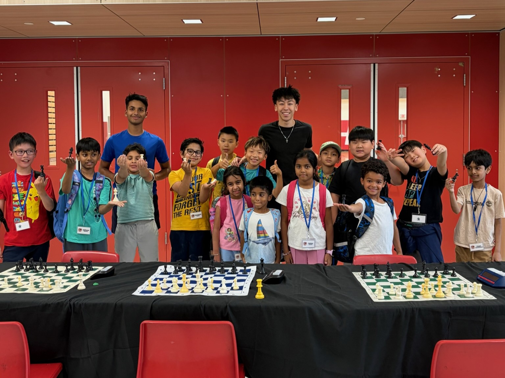

Built around a chess club and community service
What started as a single school tournament is now a state–wide nonprofit. Here's who we are and what we stand for.
Spreading the opportunity and passion for chess within Washington
Newport Chess Outreach exists to expand access to chess education regardless of zip code, school budget, or family income. We teach chess not as an end in itself, but as a vehicle for the patience, planning, and quiet self-confidence that carry far beyond the board — into the classroom, the family, and the community.

From one school tournament to programs across Washington
Newport Chess Outreach started in 2026 with a single goal: organize a school-wide chess tournament. The turnout exceeded our expectations, and the enthusiasm students brought to the board made it clear that chess had real momentum in our community.
That response pushed us to keep going. We began organizing additional tournaments and outreach events, reaching more students and more schools with each one. Along the way, we've raised a few thousand dollars to support our programming — and we're just getting started. Our sights are now set on bringing chess education to more young people across Washington.